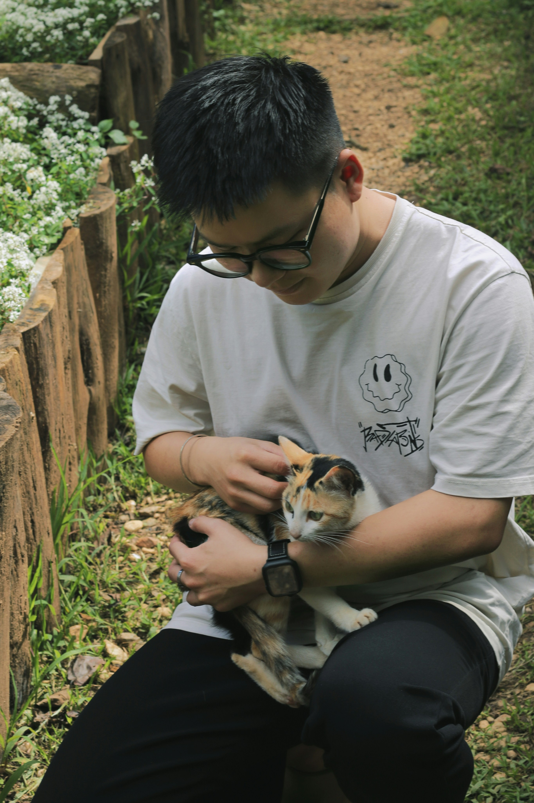

Thank you for your support and help.
Without our staff, our volunteers and your contributions, Calico Center would not be able to do the work it does now.
There are many ways to get involved.
Jump to the section you're looking for:
Volunteer With Us
Give your time, change lives.
Our volunteers are the heart of our shelter. Whether you have an hour a week or a few afternoons a month, there's a way to help that fit your schedule.
Ways to volunteer include:
- Socializing cats and kittens
- Helping at adoption events
- Assisting with cleaning, feeding and enrichment
- Taking photos or writing bios to help cats get adopted
- Administrative or behind the scenes support
No prior experience is required. Just patience, kindness and a love for cats. Training is provided and you'll be making a real difference from day one.

Interested in volunteering?
Sign Up Now